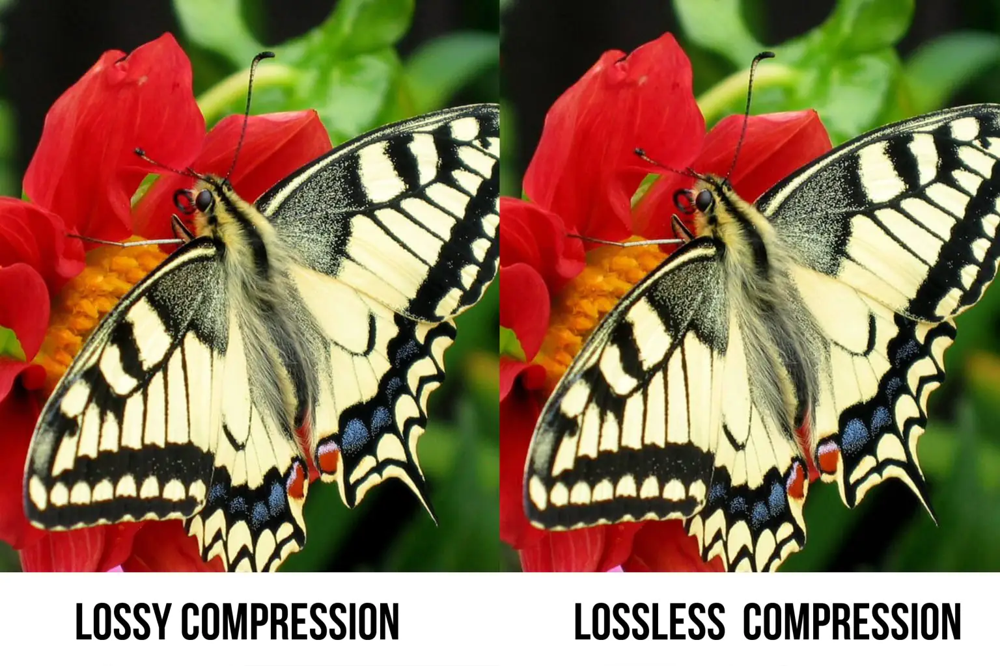
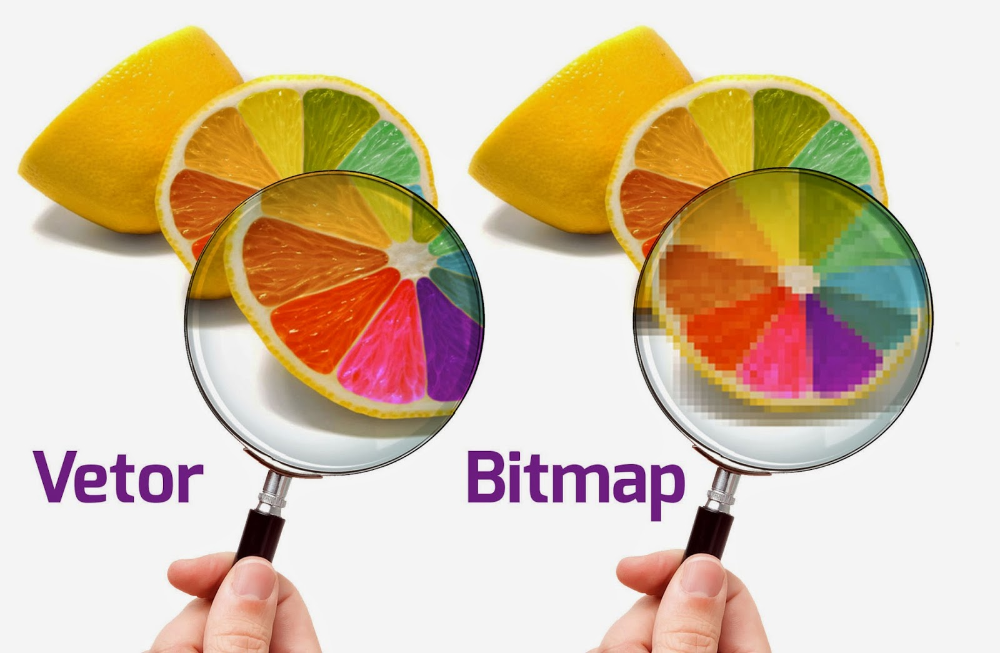

Compressie is een techniek om bestanden kleiner te maken zodat ze minder opslagruimte innemen en sneller kunnen worden verzonden. Er zijn twee soorten compressie:
Lossless compressie: alle originele gegevens blijven behouden. Wordt gebruikt bij tekstbestanden en sommige afbeeldingen (zoals PNG).
Lossy compressie: sommige gegevens worden verwijderd om ruimte te besparen. Wordt frequent gebruikt bij foto's (JPEG) en muziek (MP3).
Compressie is belangrijk voor websites, apps en digitale communicatie, omdat het zorgt voor snellere laadtijden en minder dataverbruik.

Lossless vs Lossy
Bitmap en Vecotafbeeldingen
Afbeeldingen kunnen op twee manieren worden opgeslagen: als bitmap of als vector. Bitmap (rasterafbeelding) bestaat uit pixels, elke pixel heeft een kleurwaarde. Geschikt voor foto's en complexe beelden. Voorbeelden hiervan zijn: JPEG en PNG.
Vectorafbeeldingen bestaat uit lijnen, vormen en coördinaten. Vectorafbeeldingen kunnen zonder kwaliteitsverlies worden vergroot. Het is vooral geschikt voor logo's, iconen en illustraties. Voorbeelden hiervan zijn: SVG en AI.
Het verschil tussen Bitmap en Vectorafbeeldingen is belangrijk bij grafisch ontwerp en drukwerk - een bitmap wordt namelijk wazig bij inzoomen, terwijl een vector scherp blijft.

Bitmap vs Vector
Opslag beeld en geluid - pixel tot geluidsgolf
Computers slaan beeld en geluid op als digitale gegevens, bestaande uit een reeks nullen en enen. Bij beeldomslag wordt een afbeelding opgeslagen als een matrix van pixels, waarbij elke pixel een kleurcode heeft. Des te hoger de resolutie, des te meer gegevens er zijn.
Bij geluidsopslag worden geluidsgolven omgezet in digitale samples. Hoe meer samples per seconde (bijvoorbeeld 44.100 Hz bij CD-kwaliteit), hoe beter de geluidskwaliteit. Bestandsformaten zoals MP3, WAV, JPEG en PNG bepalen hoe deze gegevens worden opgeslagen en gecomprimeerd.